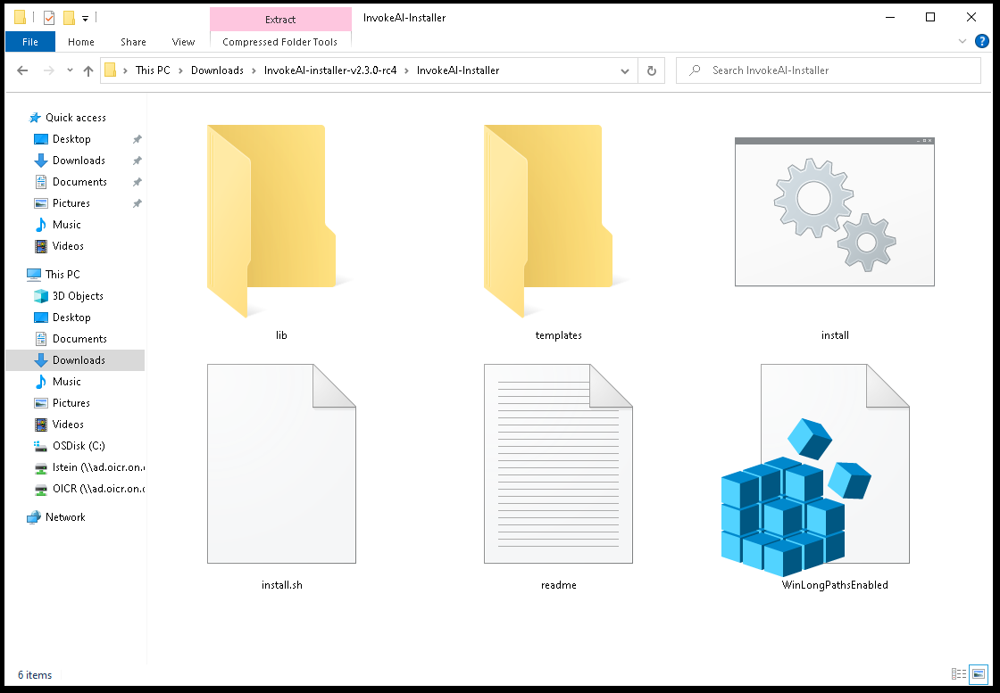
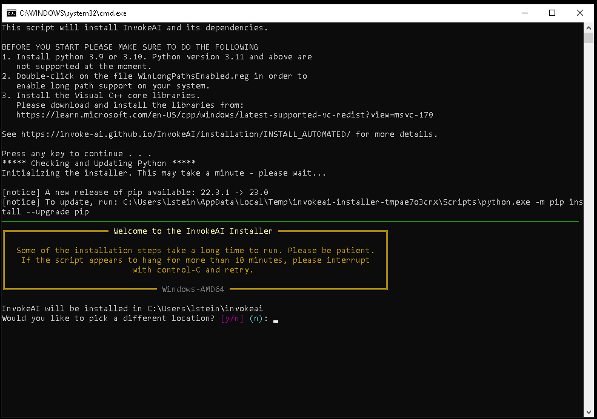
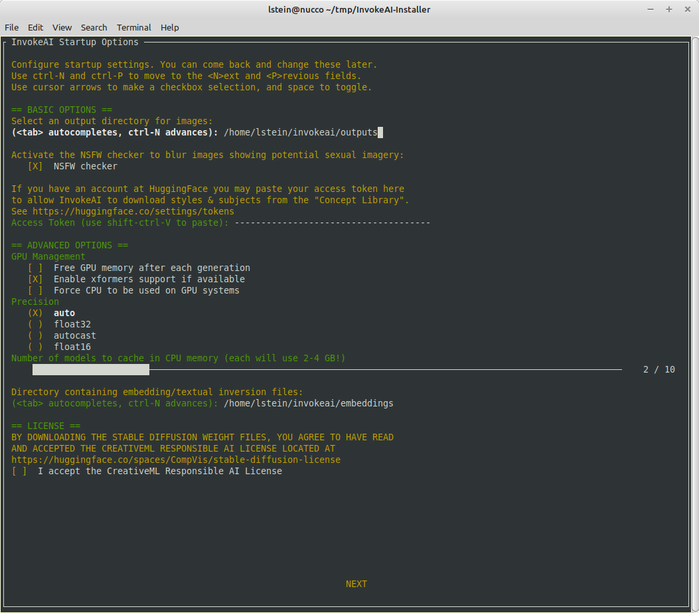
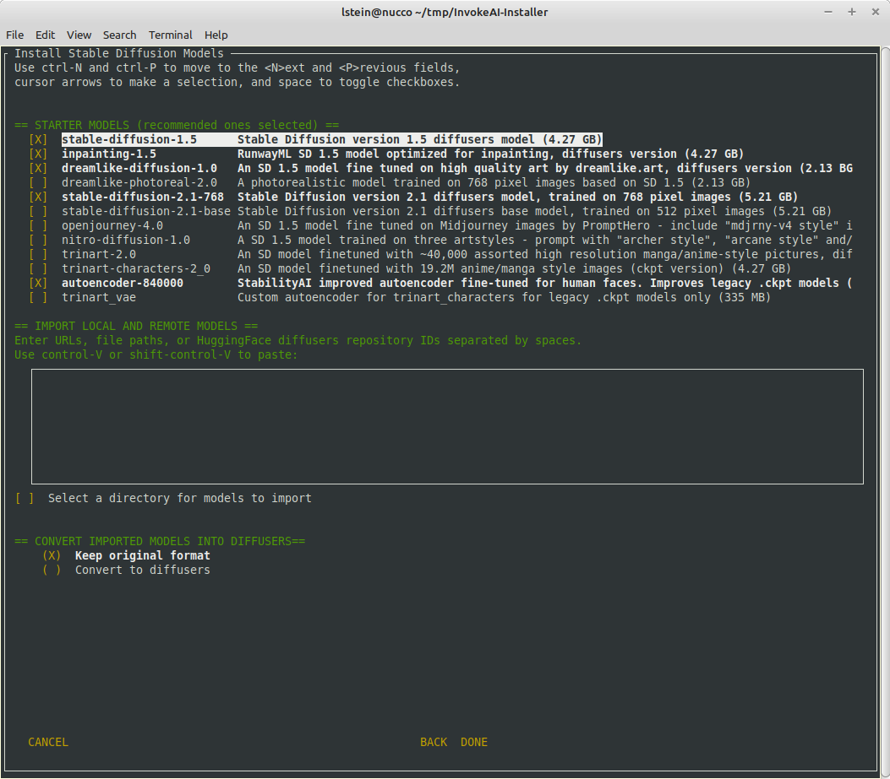

The automated installer is a Python script that automates the steps
needed to install and run InvokeAI on a stock computer running recent
versions of Linux, MacOS or Windows. It will leave you with a version
that runs a stable version of InvokeAI with the option to upgrade to
experimental versions later.
Hardware Requirements: Make sure that your system meets the hardware
requirements and has the
appropriate GPU drivers installed. For a system with an NVIDIA
card installed, you will need to install the CUDA driver, while
AMD-based cards require the ROCm driver. In most cases, if you've
already used the system for gaming or other graphics-intensive
tasks, the appropriate drivers will already be installed. If
unsure, check the GPU Driver Guide
Required Space
Installation requires roughly 18G of free disk space to load
the libraries and recommended model weights files.
Regardless of your destination disk, your system drive
(C:\ on Windows, / on macOS/Linux) requires at least 6GB
of free disk space to download and cache python
dependencies.
NOTE for Linux users: if your temporary directory is mounted
as a tmpfs, ensure it has sufficient space.
Software Requirements: Check that your system has an up-to-date Python installed. To do
this, open up a command-line window ("Terminal" on Linux and
Macintosh, "Command" or "Powershell" on Windows) and type python
--version. If Python is installed, it will print out the version
number. If it is version 3.9.* or 3.10.*, you meet
requirements. We do not recommend using Python 3.11 or higher,
as not all the libraries that InvokeAI depends on work properly
with this version.
What to do if you have an unsupported version
Go to Python Downloads
and download the appropriate installer package for your
platform. We recommend Version
3.10.9,
which has been extensively tested with InvokeAI.
Please select your platform in the section below for platform-specific
setup requirements.
During the Python configuration process, look out for a
checkbox to add Python to your PATH and select it. If the
install script complains that it can't find python, then open
the Python installer again and choose "Modify" existing
installation.
Please double-click on the file WinLongPathsEnabled.reg and
accept the dialog box that asks you if you wish to modify your registry.
This activates long filename support on your system and will prevent
mysterious errors during installation.
To install an appropriate version of Python on Ubuntu 22.04
and higher, run the following:
After installing Python, you may need to run the
following command from the Terminal in order to install the Web
certificates needed to download model data from https sites. If
you see lots of CERTIFICATE ERRORS during the last part of the
install, this is the problem, and you can fix it with this command:
You may need to install the Xcode command line tools. These
are a set of tools that are needed to run certain applications in a
Terminal, including InvokeAI. This package is provided
directly by Apple. To install, open a terminal window and run xcode-select --install. You will get a macOS system popup guiding you through the
install. If you already have them installed, you will instead see some
output in the Terminal advising you that the tools are already installed. More information can be found at FreeCode Camp
Download the Installer: The InvokeAI installer is distributed as a ZIP files. Go to the
latest release,
and look for a file named:
InvokeAI-installer-v2.X.X.zip
where "2.X.X" is the latest released version. The file is located
at the very bottom of the release page, under Assets.
Unpack the installer: Unpack the zip file into a convenient directory. This will create a new
directory named "InvokeAI-Installer". When unpacked, the directory
will look like this:

Launch the installer script from the desktop: If you are using a desktop GUI, double-click the installer file
appropriate for your platform. It will be named install.bat on
Windows systems and install.sh on Linux and Macintosh
systems. Be aware that your system's file browser may suppress the
display of the file extension.
On Windows systems if you get an "Untrusted Publisher" warning.
Click on "More Info" and then select "Run Anyway." You trust us, right?
[Alternative] Launch the installer script from the command line: Alternatively, from the command line, run the shell script or .bat file:
C:\Documents\Linco> cd InvokeAI-Installer
C:\Documents\Linco\invokeAI> .\install.bat
Select the location to install InvokeAI: The script will ask you to choose where to install InvokeAI. Select a
directory with at least 18G of free space for a full install. InvokeAI and
all its support files will be installed into a new directory named
invokeai located at the location you specify.

The default is to install the invokeai directory in your home directory,
usually C:\Users\YourName\invokeai on Windows systems,
/home/YourName/invokeai on Linux systems, and /Users/YourName/invokeai
on Macintoshes, where "YourName" is your login name.
-If you have previously installed InvokeAI, you will be asked to
confirm whether you want to reinstall into this directory. You
may choose to reinstall, in which case your version will be upgraded,
or choose a different directory.
The script uses tab autocompletion to suggest directory path completions.
Type part of the path (e.g. "C:\Users") and press Tab repeatedly
to suggest completions.
Select your GPU: The installer will autodetect your platform and will request you to
confirm the type of GPU your graphics card has. On Linux systems,
you will have the choice of CUDA (NVidia cards), ROCm (AMD cards),
or CPU (no graphics acceleration). On Windows, you'll have the
choice of CUDA vs CPU, and on Macs you'll be offered CPU only. When
you select CPU on M1 or M2 Macintoshes, you will get MPS-based
graphics acceleration without installing additional drivers. If you
are unsure what GPU you are using, you can ask the installer to
guess.
Watch it go!: Sit back and let the install script work. It will install the third-party
libraries needed by InvokeAI and the application itself.
Be aware that some of the library download and install steps take a long
time. In particular, the pytorch package is quite large and often appears
to get "stuck" at 99.9%. Have patience and the installation step will
eventually resume. However, there are occasions when the library install
does legitimately get stuck. If you have been waiting for more than ten
minutes and nothing is happening, you can interrupt the script with ^C. You
may restart it and it will pick up where it left off.

Post-install Configuration: After installation completes, the
installer will launch the configuration form, which will guide you
through the first-time process of adjusting some of InvokeAI's
startup settings. To move around this form use ctrl-N for
<N>ext and ctrl-P for <P>revious, or use <tab>
and shift-<tab> to move forward and back. Once you are in a
multi-checkbox field use the up and down cursor keys to select the
item you want, and <space> to toggle it on and off. Within
a directory field, pressing <tab> will provide autocomplete
options.
Generally the defaults are fine, and you can come back to this screen at
any time to tweak your system. Here are the options you can adjust:
Output directory for images
This is the path to a directory in which InvokeAI will store all its
generated images.
NSFW checker
If checked, InvokeAI will test images for potential sexual content
and blur them out if found. Note that the NSFW checker consumes
an additional 0.6 GB of VRAM on top of the 2-3 GB of VRAM used
by most image models. If you have a low VRAM GPU (4-6 GB), you
can reduce out of memory errors by disabling the checker.
HuggingFace Access Token
InvokeAI has the ability to download embedded styles and subjects
from the HuggingFace Concept Library on-demand. However, some of
the concept library files are password protected. To make download
smoother, you can set up an account at huggingface.co, obtain an
access token, and paste it into this field. Note that you paste
to this screen using ctrl-shift-V
Free GPU memory after each generation
This is useful for low-memory machines and helps minimize the
amount of GPU VRAM used by InvokeAI.
Enable xformers support if available
If the xformers library was successfully installed, this will activate
it to reduce memory consumption and increase rendering speed noticeably.
Note that xformers has the side effect of generating slightly different
images even when presented with the same seed and other settings.
Force CPU to be used on GPU systems
This will use the (slow) CPU rather than the accelerated GPU. This
can be used to generate images on systems that don't have a compatible
GPU.
Precision
This controls whether to use float32 or float16 arithmetic.
float16 uses less memory but is also slightly less accurate.
Ordinarily the right arithmetic is picked automatically ("auto"),
but you may have to use float32 to get images on certain systems
and graphics cards. The "autocast" option is deprecated and
shouldn't be used unless you are asked to by a member of the team.
Number of models to cache in CPU memory
This allows you to keep models in memory and switch rapidly among
them rather than having them load from disk each time. This slider
controls how many models to keep loaded at once. Each
model will use 2-4 GB of RAM, so use this cautiously
Directory containing embedding/textual inversion files
This is the directory in which you can place custom embedding
files (.pt or .bin). During startup, this directory will be
scanned and InvokeAI will print out the text terms that
are available to trigger the embeddings.
At the bottom of the screen you will see a checkbox for accepting
the CreativeML Responsible AI License. You need to accept the license
in order to download Stable Diffusion models from the next screen.
You can come back to the startup options form as many times as you like.
From the invoke.sh or invoke.bat launcher, select option (6) to relaunch
this script. On the command line, it is named invokeai-configure.
Downloading Models: After you press [NEXT] on the screen, you will be taken
to another screen that prompts you to download a series of starter models. The ones
we recommend are preselected for you, but you are encouraged to use the checkboxes to
pick and choose.
You will probably wish to download autoencoder-840000 for use with models that
were trained with an older version of the Stability VAE.

Below the preselected list of starter models is a large text field which you can use
to specify a series of models to import. You can specify models in a variety of formats,
each separated by a space or newline. The formats accepted are:
The path to a .ckpt or .safetensors file. On most systems, you can drag a file from
the file browser to the textfield to automatically paste the path. Be sure to remove
extraneous quotation marks and other things that come along for the ride.
The path to a directory containing a combination of .ckpt and .safetensors files.
The directory will be scanned from top to bottom (including subfolders) and any
file that can be imported will be.
A URL pointing to a .ckpt or .safetensors file. You can cut
and paste directly from a web page, or simply drag the link from the web page
or navigation bar. (You can also use ctrl-shift-V to paste into this field)
The file will be downloaded and installed.
The HuggingFace repository ID (repo_id) for a diffusers model. These IDs have
the format author_name/model_name, as in andite/anything-v4.0
The path to a local directory containing a diffusers
model. These directories always have the file model_index.json
at their top level.
Select a directory for models to import You may select a local
directory for autoimporting at startup time. If you select this
option, the directory you choose will be scanned for new
.ckpt/.safetensors files each time InvokeAI starts up, and any new
files will be automatically imported and made available for your
use.
Convert imported models into diffusers When legacy checkpoint
files are imported, you may select to use them unmodified (the
default) or to convert them into diffusers models. The latter
load much faster and have slightly better rendering performance,
but not all checkpoint files can be converted. Note that Stable Diffusion
Version 2.X files are only supported in diffusers format and will
be converted regardless.
You can come back to the model install form as many times as you like.
From the invoke.sh or invoke.bat launcher, select option (5) to relaunch
this script. On the command line, it is named invokeai-model-install.
Running InvokeAI for the first time: The script will now exit and you'll be ready to generate some images. Look
for the directory invokeai installed in the location you chose at the
beginning of the install session. Look for a shell script named invoke.sh
(Linux/Mac) or invoke.bat (Windows). Launch the script by double-clicking
it or typing its name at the command-line:
C:\Documents\Linco> cd invokeai
C:\Documents\Linco\invokeAI> invoke.bat
The invoke.bat (invoke.sh) script will give you the choice
of starting (1) the command-line interface, (2) the web GUI, (3)
textual inversion training, and (4) model merging.
By default, the script will launch the web interface. When you
do this, you'll see a series of startup messages ending with
instructions to point your browser at
http://localhost:9090. Click on this link to open up a browser
and start exploring InvokeAI's features.
InvokeAI Options: You can launch InvokeAI with several different command-line arguments that
customize its behavior. For example, you can change the location of the
image output directory, or select your favorite sampler. See the
Command-Line Interface for a full list of the options.
To set defaults that will take effect every time you launch InvokeAI,
use a text editor (e.g. Notepad) to exit the file
invokeai\invokeai.init. It contains a variety of examples that you can
follow to add and modify launch options.
The launcher script also offers you an option labeled "open the developer
console". If you choose this option, you will be dropped into a
command-line interface in which you can run python commands directly,
access developer tools, and launch InvokeAI with customized options.
Do not move or remove the invokeai directory
The invokeai directory contains the invokeai application, its
configuration files, the model weight files, and outputs of image generation.
Once InvokeAI is installed, do not move or remove this directory."
If you have previously installed InvokeAI or another Stable Diffusion
package, the installer may occasionally pick up outdated libraries and
either the installer or invoke will fail with complaints about
library conflicts. In this case, run the invoke.sh/invoke.bat
command and enter the Developer's Console by picking option (5). This
will take you to a command-line prompt.
Then give this command:
pip install InvokeAI --force-reinstall
This should fix the issues.
InvokeAI runs extremely slowly on Linux or Windows systems#
The most frequent cause of this problem is when the installation
process installed the CPU-only version of the torch machine-learning
library, rather than a version that takes advantage of GPU
acceleration. To confirm this issue, look at the InvokeAI startup
messages. If you see a message saying ">> Using device CPU", then
this is what happened.
To fix this problem, first determine whether you have an NVidia or an
AMD GPU. The former uses the CUDA driver, and the latter uses ROCm
(only available on Linux). Then run the invoke.sh/invoke.bat
command and enter the Developer's Console by picking option (5). This
will take you to a command-line prompt.
Everything seems to install ok, but invokeai complains of a corrupted
configuration file and goes back into the configuration process (asking you to
download models, etc), but this doesn't fix the problem.
This issue is often caused by a misconfigured configuration directive in the
invokeai\invokeai.init initialization file that contains startup settings. The
easiest way to fix the problem is to move the file out of the way and re-run
invokeai-configure. Enter the developer's console (option 3 of the launcher
script) and run this command:
invokeai-configure --root=.
Note the dot (.) after --root. It is part of the command.
If none of these maneuvers fixes the problem then please report the problem to
the InvokeAI Issues section, or
visit our Discord Server for interactive
assistance.
The models are large, VRAM is expensive, and you may find yourself
faced with Out of Memory errors when generating images. Here are some
tips to reduce the problem:
4 GB of VRAM
This should be adequate for 512x512 pixel images using Stable Diffusion 1.5
and derived models, provided that you disable the NSFW checker. To
disable the filter, do one of the following:
Select option (6) "change InvokeAI startup options" from the
launcher. This will bring up the console-based startup settings
dialogue and allow you to unselect the "NSFW Checker" option.
Start the startup settings dialogue directly by running
invokeai-configure --skip-sd-weights --skip-support-models
from the command line.
Find the invokeai.init initialization file in the InvokeAI root
directory, open it in a text editor, and change --nsfw_checker
to --no-nsfw_checker
If you are on a CUDA system, you can realize significant memory
savings by activating the xformers library as described above. The
downside is xformers introduces non-deterministic behavior, such
that images generated with exactly the same prompt and settings will
be slightly different from each other. See above for more information.
6 GB of VRAM
This is a border case. Using the SD 1.5 series you should be able to
generate images up to 640x640 with the NSFW checker enabled, and up to
1024x1024 with it disabled and xformers activated.
If you run into persistent memory issues there are a series of
environment variables that you can set before launching InvokeAI that
alter how the PyTorch machine learning library manages memory. See
https://pytorch.org/docs/stable/notes/cuda.html#memory-management for
a list of these tweaks.
12 GB of VRAM
This should be sufficient to generate larger images up to about
1280x1280. If you wish to push further, consider activating
xformers.
If you run into problems during or after installation, the InvokeAI team is
available to help you. Either create an
Issue at our GitHub site, or
make a request for help on the "bugs-and-support" channel of our
Discord server. We are a 100% volunteer
organization, but typically somebody will be available to help you within 24
hours, and often much sooner.